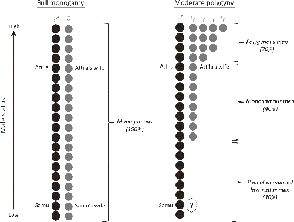
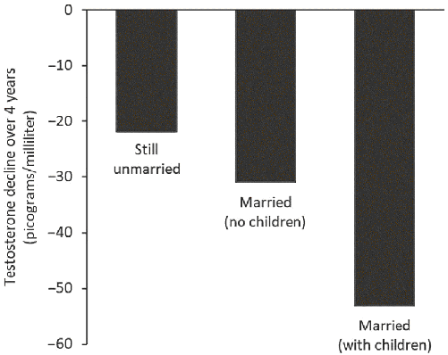
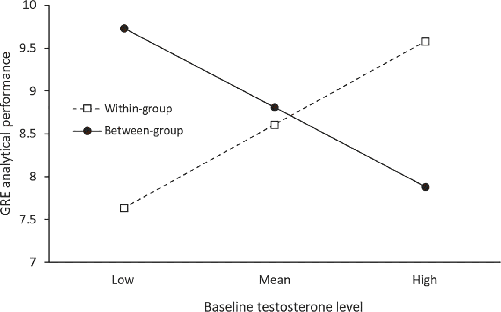

In 1521, two expanding empires collided when Hernán Cortés and his Spanish conquistadors arrived in Mexico and began conquering the Aztecs. These two powerful empires had developed in isolation from each other for at least 15 millennia, and their common ancestors were Stone Age hunter-gatherers. Despite their independent development, the two empires were strikingly similar. Both were highly stratified agricultural societies governed by complex state bureaucracies, led by hereditary rulers, and infused with powerful religions that both fueled and justified their subjugation of other societies. Nevertheless, there were some key differences.
Just a few years after his daring and cutthroat conquest, Cortés greeted New Spain’s Twelve Apostles, the first Catholic missionaries to arrive in Mexico. One member of the 12, the Franciscan friar Toribio de Benavente Motolinía, became an astute observer of the indigenous beliefs and customs within his new ministry. His writings give us a glimpse of one of the institutions that distinguished 16th-century Europeans from their Aztec contemporaries. Regarding marriage, Friar Toribio wrote:
For three or four years the Sacrament of Matrimony was not administered, except to those who were educated in the house of God. All other Indians lived with as many women as they cared to have. Some had two hundred women and others less, each one as many as suited him. Since the lords and chiefs stole all the women for themselves, an ordinary Indian could scarcely find a woman when he wished to marry. The Franciscans sought to uproot this evil; but they had no way of doing so because the lords had most of the women and refused to give them up. Neither petitions nor threats nor arguments, nor any other means which the Friars resorted to were sufficient to induce the Indians to relinquish their women and, after doing so, enter marriage with only one, as the law of the church demands … This state of affairs continued until, after five or six years, it pleased the Lord that some Indians of their own accord began to abandon polygamy and content themselves with only one woman, marrying her as the Church required … The Friars did not find it easy to have the Indians renounce polygamy. This was very hard to achieve because it was hard for the Indians to quit the ancient carnal custom that so greatly flattered sensuality.1
As an eyewitness, albeit not an unbiased one,2 the friar zeroes in on three key aspects of polygynous marriage that recur across diverse societies. First, when men are permitted by custom to marry multiple women, elite men take multiple wives. Second, polygynous marriage has powerful social dynamics that create a glut of poor, low-status men with few prospects for mating and marriage, because most of the women marry “up.” And third, the high-status men, often accompanied by their wives, resist the notion that each person should have no more than one spouse at a time.
Friar Toribio’s writings show something else central to our story: Christian missionaries are relentless. Whether in Anglo-Saxon Kent around 600 CE, the Aztec Empire in 1530, or the Peruvian Amazon in 1995, they never stop and never give up; when proselytizing preachers fail or get themselves killed, they are soon replaced by fresh recruits who continue to push the Church’s package of supernatural beliefs, rituals, and family practices.
To illustrate the inexorable dynamics of polygynous marriage, consider these observations by another ethnographer in a rather different community in the New World:
There is a shortage of eligible women to marry in every polygynous society, and this is a primary factor responsible for intergenerational conflict in Colorado City/Centennial Park. Senior males are always on the marriage market and thus compete with younger men for mates in a limited pool of eligible women. The tension between married and unmarried men influences the perceptions of teenagers. For example, in the 1960s, a local policeman … would threaten to arrest unmarried males who did not leave the community … The competition for mates is acute. Young men realize that without the support and financial backing of their families (especially their fathers), they will not be able to compete with older males. Young men know, however, that if they do not find a girlfriend before they graduate from high school, they probably never will have one. Without a girlfriend, they will leave the community to find a wife.3
This situation bears an eerie similarity to the Aztec situation described by Toribio. But, far from 16th-century Mexico, this description comes from a small town on the Utah-Arizona border in late 20th-century America. Here, the anthropologist William Jankowiak gives us a look at the social life of a polygynous Mormon community associated with the Fundamentalist Church of Jesus Christ of Latter-Day Saints. In many ways, these fundamentalist Mormons aren’t much different from most Americans. For example, after a day visiting national parks or hanging out at the mall, their dinner conversations range from the “entertainment value of The Lord of the Rings” to the health benefits of flaxseed oil. Nevertheless, polygyny’s math problem (see below) still plays out, creating a pool of disaffected, unmarried young men with few prospects and no stake in the future. These “lost boys,” as the Mormons call them, become society’s problem as they turn to crime, violence, and drugs instead of marrying to become reliable, hardworking fathers.4
To understand the power of polygynous marriage and its social dynamics, we first need to consider human nature and ponder WEIRD marriage from a species-level perspective.
By now you probably know what I’m going to say: it’s not the fundamentalist Mormons or ancient Aztecs who possess an exotic form of marriage; it’s us—WEIRD people. As with our kin-based institutions more generally, the peculiarity of WEIRD monogamy can be seen from both an evolutionary and a global-historical perspective. As you’ll see, even among monogamous societies, WEIRD marriage is peculiar.5
From among our closest evolutionary relatives—apes and monkeys—guess how many species both live in large groups like Homo sapiens and have only monogamous pair-bonding?
That’s right, zero. No group-living primates have the noncultural equivalent of monogamous marriage. Based on the sex lives of our two closest relatives, chimpanzees and bonobos, the ancestor we share with these apes was probably highly promiscuous and likely didn’t form pair-bonds at all, let alone enduring, monogamous pair-bonds. Nevertheless, since we diverged from our ape cousins, our species has evolved a specialized psychological suite—our pair-bonding psychology—that can foster strong emotional bonds between mates that remain stable for long enough to encourage men to invest in their mate’s children. This pair-bonding psychology provides the innate anchor for marital institutions. However, the nature of this anchor biases marital institutions toward polygynous pair-bonding. In contrast, our innate mating psychology doesn’t usually favor widespread polyandrous marriage—that’s one wife with multiple husbands—although there are good evolutionary reasons to expect this to pop up at low frequencies in societies lacking prohibitions against it.6
Our “polygyny bias” arises in part from fundamental asymmetries in human reproductive biology. Over our evolutionary history, the more mates a man had, the greater his reproduction, or what biologists call his “fitness.” By contrast, for women, simply having more mates didn’t directly translate into greater reproduction or higher fitness. This is because, unlike men, women necessarily had to carry their own fetuses, nurse their own infants, and care for their toddlers. Given the immense input needed to rear human children compared to other mammals, an aspiring human mother required help, protection, and resources like food, clothing, shelter, and cultural know-how. One way to obtain some of this help was to form a pair-bond with the most capable, resourceful, and highest status man she could find by making it clear to him that her babies would be his babies. The greater his paternal confidence, the more willing he was to invest time, effort, and energy in providing for her and her children. Unlike his wife, however, our new husband could “run in parallel” by forming additional pair-bonds with other women. While his new wife was pregnant or nursing, he could be “working” on conceiving another child with his second or third wife (and so on, with additional wives).
Moreover, as long as he can attract fertile mates, a man can continue to reproduce over his entire life span, unlike his wives, who have to stop at menopause. Thus men can potentially get a big fitness benefit from adding more mates—both long- and short-term partners—to their reproductive portfolios. For these reasons, natural selection has shaped our evolved psychology in ways that make men, particularly high-status men, favorably inclined toward polygynous marriage.7
I suspect you’re not shocked by this revelation, that men have certain psychological inclinations toward polygyny. What might be more surprising is that the evolved psychological push toward polygynous marriage doesn’t come just from men. Because women reproduce “in serial,” having and investing in only one baby (usually) at a time, their selection of a really good mate can be crucial. Not only do their chosen mates supply half of their children’s genes, but they may also provide protection, resources (e.g., meat, animal skins, flint, etc.), and other investments, such as teaching. In a world with polygynous marriage, young women and their families get a much larger selection of potential husbands to choose from than are available in a purely monogamous society; they can select either a married or an unmarried man. The best move for a particular woman in a hunter-gatherer society might be to become the second wife of a great hunter instead of being the first wife of a poor hunter; this helps guarantee that children get both excellent genes and a steady supply of meat (a valuable source of nutrition). Moreover, by joining a polygynous household, a woman might learn from her older co-wives, share resources like tools, honey, and cooking fires, and get help with babysitting or even nursing. Of course, in a perfect world, such a woman might prefer an exclusive arrangement with the great hunter; but, faced with the real-world choice between marrying polygynously for a better overall deal with the prestigious guy or marrying monogamously for a worse deal, she’ll often prefer to marry a married man. Thus monogamous norms constrain women’s choices as well as men’s and can prevent people from marrying whom they really want.8
As a result, polygynous marriage will appeal to both men and women under many conditions, including in societies in which women are free to select their own husbands. Polyandrous marriage, by contrast, won’t appeal psychologically to either men or women, except under relatively narrow social, economic, and ecological circumstances.9 Consistent with this picture, most anthropologically known hunter-gatherer societies permit polygynous marriage, and, statistically speaking, it usually persists at low to medium frequencies. In the most comprehensive study, 90 percent of hunter-gatherer populations around the globe had some degree of polygynous marriage, while just 10 percent had only monogamous marriage. Of the societies with polygyny, about 14 percent of men and 22 percent of women were polygynously married. Even among highly egalitarian hunter-gatherers, such as those living in the Congo Basin, 14 to 20 percent of men married polygynously.10 Not surprisingly, across all groups, it’s always the prestigious men—the great shamans, hunters, and warriors—who attract multiple wives, though few marry more than about four women. Polyandrous marriage, by contrast, is statistically invisible, though many isolated cases have been reported.11
As societies adopted farming and began to scale up in size and complexity, the emergence of large inequalities among men greatly exaggerated the intensity of polygynous marriage. The Ethnographic Atlas reveals that 85 percent of agricultural societies had polygynous marriage. In many populations, taking additional wives remains a sign of a man’s prestige and success, with the highest-status men having many more than four wives; in fact, a successful man who doesn’t take additional wives could raise eyebrows. Meanwhile, only 15 percent of societies in the Atlas are described as “monogamous” and a mere 0.3 percent as “polyandrous.” By creating social strata, hereditary wealth, inherited political power, and occupational castes, cultural evolution magnified the impact of our innate polygynous biases on marriage and mating as societies scaled up.12
During this scaling-up process, polygyny got so extreme that it can be difficult to comprehend the magnitude. The easiest way to get a glimpse of what was going on is by looking at the size of elite harems at different places and times around the globe. In the South Pacific at the time of European contact, Tongan chiefs had a few high-ranking wives who helped solidify alliances with other powerful families, and a few hundred secondary wives. In Africa, Ashante and Zulu kings each had 1,000 or more wives. However, these are just the paramount chiefs or kings; there was usually a fleet of lesser elites who maintained smaller harems for themselves. Zande kings, for example, each had more than 500 wives, but their chiefs also each maintained about 30 or 40 wives, and sometimes as many as 100. In Asia, things were often even more extreme: medieval Khmer kings in Cambodia possessed five elite wives and several thousand secondary wives who were themselves graded into various classes. In early China (1046–771 BCE), Western Zhou kings had one queen, three consorts, nine wives of secondary rank, 27 wives of third rank, and 81 concubines. By the second century CE, Han emperors had harems of 6,000 women.13
The parallels are striking: on different continents, and during distinct historical epochs, similar institutions emerged to provide elite men with vast numbers of exclusive mates. As societies scaled up, political and economic power often became concentrated in particular houses, clans, ethnic groups, or other coalitions. When unchecked by intergroup competition, these elites gradually pushed customs and laws in directions that benefited themselves at the expense of their societies.14
The key point is that, in a world without norms, beliefs, laws, or gods that inhibit successful and powerful men from taking many exclusive mates, our evolved psychological biases and inclinations often gave rise to extreme levels of polygyny that slowly insinuated themselves into the formal institutions of large, complex societies.
Okay, but how did we get here? Well, first, where’s here?
Polygynous marriage remains legal in much of Africa, Central Asia, and the Middle East. At the same time, nearly all modern legal prohibitions on polygynous marriage derive from WEIRD foundations, ultimately rooted in Christian doctrines. In Japan and China, the adoption of “modern” (Western) marriage began in the 1880s and 1950s, respectively. In both cases, new governments explicitly copied Western secular institutions and laws, including prohibitions on polygynous marriage. In the 1920s, the new Republic of Turkey copied a whole set of WEIRD formal institutions and new laws, including prohibitions on polygynous marriage. In India, the Hindu Marriage Act of 1955 prohibited polygynous marriage for everyone except Muslims, who were still permitted to have up to four wives in accordance with their religious tradition. Naturally, this led some prestigious Hindu men to convert to Islam, thinking they’d found a legal loophole. In 2015, however, the Indian Supreme Court ruled that the law applies to everyone, no exceptions. Thus WEIRD monogamy is a relatively new import in most of the world.15
What drove the spread of monogamous marriage, first within Europe and later across the globe?
At a superficial level, the main drivers seem to be the successful spread of the Church in Europe and then the subsequent expansion of European societies around the globe, which paved the way for a flood of missionaries seeking converts and “saving” souls. Underlying these historical patterns are two standard forms of intergroup competition. In some cases, the European expansion involved military conquest, as among the Aztecs, where missionaries arrived to minister to newly subjugated peoples. Other times, and especially in more recent centuries, sophisticated societies responded to the evident economic and military power of European and European-descent societies (e.g., the United States) by voraciously copying their formal institutions, laws, and practices, ranging from democratic elections to the bizarre habit of wearing neckties. So, the question is whether monogamous marriage is more like contract law, which provides a foundation for commercial markets, or more like donning neckties, a ridiculous sartorial custom that spread globally by piggybacking on European prestige.
Below, I’ll make the case that monogamous marriage norms—which push upstream against our polygynous biases and the strong preferences of elite men—create a range of social and psychological effects that give the societies that possess them a big edge in competition against other groups. Let’s see how this works.
Polygynous marriage tends to generate a large pool of low-status unmarried men with few prospects for marriage or even sex. Responding to this situation, men’s psychology shifts in ways that spark fiercer male-male competition and, under many conditions, foment greater violence and more crime. To see this, consider the situation illustrated in Figure 8.1. Here, we compare two hypothetical communities, one monogamous and the other polygynous, each with 20 men (black circles) and 20 women (gray circles). I’ve ordered the men from top to bottom according to their social status, from CEOs to high school dropouts or from emperors to peasants. In the monogamous community (left side), the pool of unmarried low-status men is empty. Every man can find a wife, have children, and get a stake in the future. In the polygynous community (right side), the highest-status man, who represents the top 5 percent of wealth or status, has four wives. The next two men below him, representing those from the 85th to the 95th percentile in status, have three wives each. Below them, the guy representing the 80th–85th percentile range has two wives. From the 80th on down to the 40th percentile, everyone is monogamously married. Below this, the bottom 40 percent of men lack mates, possess few prospects for mating or marriage, and are thus unlikely to ever become husbands or fathers. It’s this 40 percent that presents the math problem: the pool of “excess men” created by polygyny who have nothing to lose, from an evolutionary point of view. The degree of polygyny in my hypothetical community is not extreme, and not much different from what has been observed in many hunter-gatherer societies. No man has more than four wives. Only the top 20 percent of males marry polygynously. Most married men have only one wife, and most women have only one husband. Yet you still end up with 40 percent of the male population as involuntary lifetime bachelors. The level of polygyny in this stylized example is in fact substantially below that observed today in many African societies as well as in the polygynous Mormon communities of North America.17
The math problem in Figure 8.1 illustrates that men in polygynous communities usually face much greater male-male competition than those in monogamous communities. Consider the situation of Samu, the guy in our hypothetical polygynous community who represents the men in the bottom 5th to 10th percentile. Samu must somehow leap up past the 40th percentile if he wants even a shot at getting a single wife. If he plays it safe and works hard on his small farm, he’ll climb no more than 25 percentile points. This won’t get him above the 40th percentile, so he’ll have little shot at attracting a wife and will likely end up an evolutionary zero. This is a fate worse than death for natural selection. Samu’s only hope is to take risky actions that will catapult him up the ladder of social status 35 or more percentile points—he needs a big jump.
To put this in stark terms, suppose Samu happens upon a drunk merchant in a dark alley late at night. He can either rob the rich merchant and use the money to expand his farm or do nothing (let’s set aside the option of helping the merchant). If he does nothing, his chances of getting into the marriage and mating market remain low at, say, 1 percent. This means there’s a 99 percent chance that he’ll end up an evolutionary zero. However, if he robs the merchant, he’ll increase his chances of finding a wife by 10 percent, but he’ll face a 90 percent chance of getting caught and executed—once again, he’ll end up an evolutionary zero. What should he do? Well, doing nothing means he has only a 1 percent chance of mating and having kids, while robbing the merchant increases his chances to 10 percent. Overall, for Samu, robbing the merchant looks 10 times better than doing nothing. With this kind of calculus in the background, natural selection has tilted male psychology such that—under these conditions—men are more inclined to roll the evolutionary dice and commit the crime.

Now, instead, suppose Samu lived in our monogamous community and encountered the same drunk merchant. In this world, Samu is already married and has a two-year-old daughter. If he robs the merchant, there’s a 90 percent chance he’ll be executed, which means he won’t be able to provide for his young daughter or continue expanding his family with his current wife. Here, Samu has a stake in the future and has already avoided being an evolutionary zero. Of course, if he robs the merchant, there is that 10 percent chance he’ll get richer, and that would be nice for him (though not for the merchant); but, Samu is limited to having only one wife at a time in this society, so the evolutionary upside to any big economic payoff is less dramatic than in a polygynous society. He can’t, for example, add a second, younger wife to his household.
Key here is that the biggest threat men face is ending up an evolutionary zero—having no mating prospects at all. To see this, realize that if you have one child, he or she might give you four grandchildren … who might give you 16 great-grandchildren. You are in the evolutionary game. However, if you never or rarely have sex (and thus have zero children), that’s it for all time. You and your direct lineage are done. Because of this evolutionary ultimatum, the evolved psychology of low-status men responds very differently to the social conditions created by monogamy vs. polygyny (depicted in Figure 8.1). Of course, from a psychological perspective, a man’s concern is much more about mates and mating opportunities than about counting children. But this is because, over most of our evolutionary history, more mating and mates for men generally meant more kids.
Now let’s look at the impact of marital institutions on the higher-status men in our polygynous society by focusing on Attila. Representing the 75th–80th percentile, Attila is among the monogamously married men with the highest social status in his polygynous community. However, unlike in a monogamous community, Attila is still in the marriage market and will have to choose between investing his time, effort, and resources in his current wife and their children, versus seeking additional wives. If he can just increase his wealth or status a little bit, he can take a second wife. And if he manages a 10-percentile-point leap in social status, he can triple his number of wives. In this situation, Attila will often be motivated to shift his time and energy away from investing in his current wife and her children to instead apply it to obtaining additional wives. By contrast, in the monogamous community, Attila is married to a single wife. However, here the social norms surrounding marriage and sex close off, or at least impede, his pathways to the large evolutionary benefits available in a polygynous society. Faced with this situation, Attila is more likely to settle for smaller, incremental improvements in his status or wealth, and to apply these to investing in his current wife and children. Thus the evolutionary payoffs to status-climbing in polygynous societies are much greater than in monogamous societies, even for higher-status married men. In polygynous societies, the pull to invest in seeking additional wives over investing in one’s current wife and her children is just much greater than in monogamous societies.
Importantly, my example assumes that women in this polygynous society are free to choose their husband and that they are picking according to the success of their children relative to others in their society. That is, by becoming the second, third, or fourth wife of the richest men in their society, women are doing what’s best for themselves and their children. By contrast, women in the monogamous society are prevented from becoming plural wives—even if they want to—and are thus effectively forced to marry lower-status men. Interestingly, because of how monogamous marriage influences social dynamics and cultural evolution, inhibiting female choice—by prohibiting women from freely choosing to marry men who are already married—results in both women and children doing better in the long run (on average). This occurs because of how the social dynamics unleashed by polygyny influence household formation, men’s psychology, and husbands’ willingness to invest in their wives and children.18
The logic I’ve just sketched for Samu and Attila illustrates how monogamous marriage suppresses male-male reproductive competition and drains the low-status pool of unmarried men, giving these men a stake in the future (e.g., a child, or at least a chance for one). By suppressing the intensity of this competition, monogamous marriage induces shifts that recalibrate men for this new social environment. These shifts likely include on-the-fly responses to the current environment, gradual psychological calibrations that develop as boys grow up, and, through cultural learning, the transmission and accumulation of successful strategies, beliefs, and motivations molded to fit the new institutional environment. Let’s start by considering how marriage changes men’s favorite hormone.19
In males, the testes produce the steroid hormone testosterone in large quantities compared to females (who don’t have a dedicated gland). To understand testosterone (T), it’s best to step back, start with birds, and then shift to Homo sapiens. In birds, testosterone contributes to the development of secondary sex characteristics; but instead of the deep voices, hairy chests, and square jaws seen in humans, male birds variously develop brightly colored plumage, large combs, and fancy wattles (Figure 8.2). Across species, testosterone is also related to mating and courtship displays, including beautiful serenades and athletic dances, as well as to both territorial defense and male-male fights over females. These effects of testosterone appear in many mammals as well, but the cool thing about birds is that many species form enduring pair-bonds with only one other partner per season (“monogamy”), and males even help out in the nest with the offspring—that is, they do paternal investment like fathers in many human societies. Of course, as is the case for 90 percent of mammal species, there are also many bird species that lack both pair-bonding and any male investment in nests, eggs, or chicks. This avian variation allows us to compare the effects of testosterone in species with different patterns of pair-bonding and mating. Do you see where I’m going?
In many monogamous species, such as song sparrows, males try to find one mate each breeding season. Once the eggs arrive, the male will defend the nest and help his mate rear the chicks. Testosterone levels in these males respond to the situation and the season. When the mating season is ramping up, he’ll have to battle other males to establish a territory, which he needs to attract a mate. In anticipation, his testosterone levels begin rising and continue to increase until his mate begins ovulating, at which point he must guard her 24-7 to keep other males out during this critical period. Once his mate gets pregnant, his testosterone levels drop as he prepares to feed and care for the hatchlings. When this is over, and he no longer has to defend a territory, his testosterone levels drop further. By contrast, in polygynous species such as the red-winged blackbird, whose males fight for large territories in an effort to attract as many mates as possible, male testosterone goes up for the breeding season but then doesn’t decline when his mates get pregnant or when his chicks begin arriving. This is not surprising, since males in these polygynous species don’t help much in the nest and continue to look for additional mates to form more pair-bonds.
Because you can do experiments on wild birds, we know that in monogamous species certain cues, like seasonal changes in sunlight, drive testosterone changes, and that these hormonal changes influence behavioral shifts. For example, when song sparrows are fitted with special implants that prevent the normal testosterone drop that occurs after a male’s mate gets pregnant, males continue fighting and end up doubling the size of their territory relative to those sparrows lacking the implants. The males with implants also became polygynous, securing two or even three mates. In other bird species, testosterone implants increase both male singing and territorial aggression while reducing the birds’ efforts to feed their chicks or defend the nest. One suspects they were too busy singing and fighting to worry much about babies. Sound familiar?21
In societies with WEIRD monogamy, men are a bit like monogamous birds: getting married and becoming a father lowers a man’s testosterone. If he divorces, his T levels typically climb again. The depleting effects of marriage and children on testosterone have been shown in various North American populations, but my favorite study comes from the city of Cebu in the Philippines. In 2005, a team led by the anthropologist Chris Kuzawa measured the testosterone levels of 465 single men in their early 20s. Over the next four years, 208 of these men got married, and 162 of those had children. In 2009, Chris’s team again measured the men’s T levels. As in the United States, men’s testosterone gradually declined with age. But, as Figure 8.3 illustrates, the rate of decline was dependent upon what happened to the men in the intervening years. T levels plummeted among those who both got married and had children, while they declined the least among those who remained single. Notably, the men who were initially highest in testosterone were also the most likely to get married—that is, higher testosterone in 2005 predicted success in the competition for mates in the ensuing four years.22
As in birds, this line of research suggests that humans possess a physiological system that regulates men’s testosterone, along with other aspects of our psychology, by relying on cues related to mating opportunities, parenting demands, and status competition. When necessary, T levels rise to prepare males to compete for status and mates. But, when it’s time to build nests and nurture offspring, T levels decline. Across human societies, fathers with lower testosterone care more for their infants and are better attuned to their cries. WEIRD monogamy norms manipulate these dials by reducing the mating opportunities available to married men and by bringing them into greater contact with their children, both of which lower their testosterone levels.24

Aggregating these effects across an entire population, we can begin to see how monogamous norms suppress testosterone at a societal level. By prohibiting higher-status men from monopolizing potential wives, monogamous norms allow many more lower-status men to both get married (pair-bond) and father children. Thus WEIRD marital norms ensure that a higher percentage of men will experience the low-T that attends both monogamous marriage and caring for children. By contrast, in polygynous societies, many more men (40 percent in Figure 8.2) will remain in the “Still Unmarried” category of Figure 8.3 throughout their lives. Thus, in polygynous societies, a higher percentage of men never experience the testosterone declines observed in men from monogamous societies. So, like polygynous birds, unmarried men in polygynous societies retain relatively higher levels of testosterone across their life span.25
Interestingly, because polygynous marriage also changes the social world faced by married men, focusing only on marrying off low-status men underestimates monogamy’s suppressive effects. To understand why, remember that in polygynous societies married men remain on the marriage market. Consequently, unlike in monogamous societies, men’s testosterone doesn’t decline with age in polygynous societies. Or if it does, the decline is muted compared to what we see in WEIRD societies. In some cases, men’s testosterone may even go up with age. For example, among the Swahili-speaking inhabitants of Lamu Island in Kenya, neither getting married nor having children reduces a man’s testosterone. However, taking a second wife, which about a quarter of men do, is associated with somewhat higher testosterone levels. Here, higher T levels could drive men to look for potential wives, or new wives might elevate men’s T levels. Either way, these effects are suppressed under monogamous marriage.26
In Tanzania, the impact of different social norms on men’s physiology can be seen by comparing Datoga cattle-herders with the nearby Hadza hunter-gatherers. Among the patrilineal Datoga, where about 40 percent of married men have multiple wives, becoming a father has no detectable effect on T levels. For both married and unmarried Datoga men, the only normative constraint on their sex lives is that they absolutely cannot have sex with other men’s wives. Further, Datoga men live and sleep in houses with other men, separate from their wives and children. Infants are considered part of the mother’s body until weaning, so Datoga men don’t handle their babies. In light of such norms, it’s not surprising that the testosterone of Datoga fathers doesn’t decline. By contrast, among the Hadza, polygynous marriage occurs in only 1 out of 20 men (5 percent), and social norms require fatherly care of infants and children. So, Hadza men’s T levels do drop a bit when they have children, and the size of the drop is proportional to the amount of time they spend on childcare.27
The key difference between humans and birds is that in our species cultural evolution can generate social norms that exploit these built-in hormonal responses for its own ends. Among groups like the Datoga, the survival of their clans and tribes depended—in part—on the audacity and ferocity of their warriors, and every man was a warrior. By sustaining higher testosterone levels, norms like living separately from wives and children may provide an edge in competition with other clans and tribes. In contrast, Christian monogamy was a particularly potent package for suppressing T levels. Besides limiting men to one wife, the Church’s MFP included several other active ingredients. First, it constrained men from seeking sex outside of marriage—from visiting prostitutes or having mistresses. To accomplish this, the Church worked to end prostitution and sexual slavery while creating social norms that motivated communities to monitor men’s sexual behavior and make violations public. God, of course, was enlisted to monitor and punish the sexual transgressions of both men and women, which fueled the development of Christian notions of sin and guilt. Second, the Church made divorce difficult and remarriage close to impossible, which prevented men from engaging in serial monogamy. In fact, under the Church’s program, the only way anyone could legitimately have sex was with one’s spouse for procreation.28
This contrasts with other monogamous societies, such as Athens or pre-Christian Rome; in these societies, men were limited to one wife but were otherwise not strongly constrained. Not only could men easily divorce, but they could also purchase sex slaves, take foreigners as concubines, and use numerous inexpensive brothels.29
The consequence is that WEIRD marriage, which of course was built out of Christian marriage, generates a peculiar endocrinology. It’s widely believed by physicians that testosterone “naturally” declines as men age. In the 21st-century United States, these drops are so severe that some middle-aged men are treated medically for low-T. But, as I’ve explained, across societies possessing more human-typical marriage institutions we don’t see these declines as often, and when we do, they aren’t nearly as steep as in WEIRD societies. It seems that a WEIRD endocrinology accompanies our WEIRD psychology.30
I’ve spent some time on testosterone to delineate just one biological pathway that institutions have evolved to exploit as a mechanism to influence our behavior, motivations, and decision-making. Here, you’re seeing how the Church, through the institution of monogamous marriage, reached down and grabbed men by the testicles. There’s little doubt that cultural evolution has found myriad biological pathways into our brains and behavior. Now, let’s move from hormones to psychology, and consider how monogamous marriage suppresses men’s competitiveness, risk-taking, and revenge-seeking while increasing their impersonal trust and self-regulation.31
To explore how monogamous marriage influences psychology, I’ll discuss two kinds of evidence. First, because we now know that monogamous marriage suppresses T levels, we’ll consider how this hormone affects decision-making, motivation, and teamwork. Second, because monogamous marriage usually increases the availability of potential mates (unmarried women), we’ll examine how shifting men’s perceptions about the availability of mates influences their patience and decision-making.
What are the impacts of testosterone on our behavior? To prepare individuals for status competition or mating, testosterone operates through a variety of complex biological processes to alter our psychology. In anticipation of status challenges, in contests involving everything from judo and tennis to chess and dominoes, testosterone levels often surge.32 Studies that experimentally manipulate testosterone show that raising levels can (1) fuel competitive motivation, which can increase aggression; (2) intensify social vigilance for challenges or threats; (3) suppress fear; and (4) heighten people’s sensitivity to rewards and inhibit their responsiveness to punishments.33 Of course, testosterone also increases people’s sex drive.
The competitive, zero-sum mind-set favored by testosterone can be costly. In a simple experiment, men were paired with a stranger and given an opportunity to repeatedly press either button A, which slightly increased their own cash payoffs, or button B, which substantially decreased their partner’s payoffs. Those interested in earning the most money should have always, or at least mostly, pressed button A, but those most intent on earning more money than their partner (to maximize their relative payoffs) would need to use button B (lowering their partner’s payoff). When injected with testosterone, men were more likely to spend time pressing button B than they had been when injected with a placebo. The result was that those with boosted testosterone levels tended to beat their partners (opponents?) but earned less total money over the course of the experiment.34
Further, we can get a deeper sense of the social consequences of these hormonal effects in an experiment in which participants were placed into two-person groups. Pairs competed against each other in the within-group treatment or competed as a pair against another pair in the between-group treatment. The competition wasn’t a wrestling match or tug-of-war but instead a competition for the best scores on the Graduate Record Examination (GRE), a standardized test used in graduate school admissions. In the within-group treatment, participants were entered into a lottery for a prize if they beat their partner’s test score. In the between-group treatment, participants were entered into the lottery if they and their partner’s score beat the other team’s.
The results show that those with relatively high testosterone, measured when they arrived at the lab, performed 18 percent better when they had to beat their partner—that is, when facing zero-sum within-group competition (Figure 8.4). Meanwhile, those with low testosterone performed 22 percent better during the between-group competition. This suggests that if you are facing steep competition between groups, including organizations, companies, nations, or military units, in tasks demanding superior cognitive performance or analytical skills, you should avoid the high-T guys, or suppress their levels with WEIRD marriage norms.35
Elevated testosterone levels can also reduce a person’s assessment of the trustworthiness of strangers, probably through its effects on their social vigilance and perception of the world as a zero-sum game. In one study, participants were asked to judge the trustworthiness of 75 different strangers based on photographs of their faces. Each participant did this twice, once after getting a dose of testosterone and once after receiving a placebo—of course, people didn’t know which shot they got each time. After getting dosed with testosterone, participants judged the same faces as substantially less trustworthy than they did when they received the placebo. Interestingly, those who tended to regard others as more trustworthy in the placebo condition experienced the largest drop in their trustworthiness judgments after receiving a testosterone boost.

Follow-up work using brain scans suggests that testosterone creates this effect on trustworthiness evaluations by suppressing the interconnections between the prefrontal cortex and the amygdala. Uninhibited by the prefrontal cortex, the amygdala drives people’s response to untrustworthy faces. Thus, by suppressing testosterone levels, monogamous marriage may be giving men’s prefrontal cortices more control, thereby promoting greater self-regulation and self-discipline based on learned standards (such as impersonal norms about trust).37
These kinds of experiments confirm that testosterone can and does sometimes influence men’s (1) hair-trigger response to challenges, (2) taste for revenge, (3) trust in others, (4) capacity for teamwork, and (5) financial risk-taking. However, it’s crucial not to oversimplify the effects of this hormone, which necessarily operates through complex biological interactions involving other hormones and brain chemicals. Moreover, keep in mind that testosterone is not about taking risks, behaving impatiently, acting gressively, or distrusting people per se. It’s about assessing and motivating the most effective actions for climbing the status ladder. It’s perfectly plausible that high testosterone could lead individuals—despite their depressed assessments of trustworthiness—to invest with strangers or cooperate on a team if this represents the most promising route to higher status. They may take the risk of being swindled or exploited because there are no less perilous routes up the status mountain. At the societal level, problems arise when the most viable, or only, road to higher status (and mating) demands that status seekers lie, cheat, steal, and kill to get up the ladder.38
The problem with laboratory findings like these is that they don’t tell us if such effects cash out in the real world. Do they matter?
There’s good reason to suspect that they do. Much research has examined the relationship between men’s long-term testosterone levels and their real-world behavior. Based on work in WEIRD societies, men with higher testosterone levels are more likely to be arrested, deal in stolen property, fall into debt, and use weapons in a fight. They are also more likely to smoke, abuse drugs, drink heavily, gamble, and engage in dangerous activities. Testosterone is associated with measures of dominance in both teenagers and adults, and there is a weak but persistent relationship between testosterone levels and violent aggression, including domestic violence. Of course, with this kind of real-world evidence, we don’t know if higher testosterone levels are causing the behaviors or if the person’s experiences are fueling testosterone production, but experimental work like that just described suggests that this is a two-way street. If it’s true that higher testosterone levels encourage criminal behavior among lower-status men, and that marriage lowers relative testosterone levels, then does marriage also suppress a man’s likelihood of committing crimes? Indeed it does, but before turning to that evidence, let’s consider how men’s perceptions of sex ratios affect their decision-making.39
Many psychological experiments suggest that men monitor the intensity of male-male competition in part by looking at the ratio of competing men to available women in the local environment and recalibrating their patience, risk-taking, and other aspects of their psychology in adaptive and predictable ways. For example, in a delay-discounting decision task similar to those discussed in Chapter 1, men who were experimentally induced to think that the local environment was more sexually competitive—with more men than women—became more willing to take the immediate but smaller payoffs over the delayed but larger payoffs. This and similar experiments suggest that when men perceive greater male-male competition—excess men—they often become less patient and more risk-taking. Of course, like most experiments in psychology, this work was done with WEIRD Americans, so we should worry about whether it generalizes to the species. However, these laboratory findings converge nicely with the real-world effects that “excess men” have on crime rates in China, which we’ll examine below. This convergence increases our confidence.40
Psychological shifts like these, which affect impulsivity, competitiveness, and self-regulation, probably make individuals more likely to commit crimes, drink to excess, and take illegal drugs. Of course, many nonpsychological factors also influence people’s decisions to commit crimes and abuse drugs. Interestingly, while convicted criminals show levels of honesty and cooperation comparable to others from their societies in controlled laboratory experiments, they take bigger risks in seeking higher payoffs in experiments in both Britain and China. In fact, unlike in most populations, where women are less risk-taking than men, female prisoners are slightly more risk-taking than male prisoners. Both prisoners and drug abusers show greater impatience and impulsivity in controlled psychological studies (among WEIRD people) than matched groups who are neither prisoners nor drug users. Taken together, this work suggests that monogamous marriage, by shifting men’s psychology in key ways, should lower crime rates.41
Just like his T levels, when a man gets married in a WEIRD society, his chances of committing a variety of crimes also drop. To start, many studies show that unmarried men are much more likely to commit robbery, murder, and rape than married men. Bachelors are also more likely to gamble, abuse drugs, and drink heavily. These patterns hold even when differences in age, socioeconomic status, employment, and ethnicity are considered. The problem with these studies is that they don’t tell us if getting married actually causes men to commit fewer crimes or drink less, or whether criminals and alcoholics are less likely to find marriage partners. Of course, it’s possible that the causality goes both ways.
One way around this problem, at least partially, is to follow the same men over the course of their lives and compare their behavior during the married and unmarried periods. In one famous study, 500 boys from a Massachusetts reform school were tracked from age 17 into retirement. The study shows that getting married cuts a man’s chances of committing a crime by half, both for property crimes like burglary, theft, and robbery and for violent crimes like assault and battery. Across all crimes, marriage cuts the rate by 35 percent. If guys had a “good” marriage, they were even less likely to commit a crime. Remember, we are comparing individuals with themselves during different periods of their lives, so nothing about the person himself explains these effects.42
Of course, one worry is that the effects of different life stages might explain the results. Perhaps exuberant young men commit crimes but then grow up, settle down, and get married—so marriage looks like it’s causing the decline in crime, but it’s just correlated with the “settling down” phase. Conveniently, many of these guys got married and divorced multiple times over their lives, and some became widowers. Strikingly, not only did a man’s likelihood of committing a crime go up after a divorce—when he became single again—but it also increased after his wife passed away. Numerous other studies support the view that getting married in a monogamous society reduces a man’s likelihood of both committing crimes and abusing alcohol or drugs.43
What do the effects of WEIRD marriage on crime tell us about the effects of changing a polygynous society into a monogamous one? In polygynous societies, the math problem will generally create a larger pool of low-status men, many of whom will never marry or have children. Consequently, they won’t experience the psychological shifts, induced by marriage, that reduce their chances of committing a crime. In the absence of this marital prophylaxis, the men in the pool will remain at an increased risk for criminal behavior and other social ills over their entire lives. They will also die younger, for a variety of reasons. So, while the use of reform school boys in the study above may have seemed peculiar, these are precisely the kinds of low-status males who would become trapped in the pool of excess men created by polygynous marriage.44
The above inferences follow logically, but how can we be sure that a pool of excess unmarried males in a society will really turn to crime? China’s famous one-child policy provides precisely the kind of natural experiment needed to test this reasoning. The one-child policy, which China began to implement in the late 1970s, constrained family size and limited many couples to one child.45 Because of China’s history of patrilineal families, many people possessed a potent cultural preference for having at least one son, to carry on the lineage. Those limited to one child strongly preferred boys. As a result, millions of female fetuses were selectively aborted, and baby girls were orphaned. As this policy was imposed in different provinces at different times, the sex ratio began to gradually shift in favor of males. Between 1988 and 2004, the number of “surplus” men almost doubled, and by 2009 there were 30 million “extra” males.46
As the surplus boys became men, arrest rates nearly doubled, and crime rates soared, rising nationally at 13.6 percent per year. Analyzing the data on crime and sex ratios from 1988 to 2004, the economist Lena Edlund and her team showed that as the male-heavy cohorts created by the one-child policy reached maturity in different provinces, crime began to climb and continued climbing as the pool of excess men swelled. Because the policy was implemented in different years in different provinces, the staggered effects across China are clear: in each province, about 18 years after the one-child policy was implemented, the pool of excess males reached maturity and crime rates started going up. Both arrests and crime rates continued to rise in lockstep with the expanding pool of surplus men.47
Since men commit most crimes, you’d expect crime to increase simply due to having more men. However, detailed analyses reveal distinct psychological shifts: men born into cohorts with more males relative to females were more likely to commit crimes than men with similar incomes and education who were born into less male-biased cohorts.48
Of course, these pools of excess men in China were not created by polygynous marriage. Nevertheless, consistent with both the laboratory evidence above and the effects of WEIRD marriage on men’s criminal inclinations, the natural experiment created by China’s one-child policy demonstrates that large pools of “excess” unmarried men generate psychological shifts that alter decision-making in ways that result in higher crime rates.49
All this suggests that the Church, through its centuries-long struggle to disseminate and enforce its peculiar version of monogamous marriage, unintentionally created an environment that gradually domesticated men, making many of us less competitive, impulsive, and risk-prone while at the same time favoring positive-sum perceptions of the world and a greater willingness to team up with strangers. Ceteris paribus, this should result in more harmonious organizations, less crime, and fewer social disruptions.50
Monogamous marriage changes men psychologically, even hormonally, and has downstream effects on societies. Although this form of marriage is neither “natural” nor “normal” for human societies—and runs directly counter to the strong inclinations of high-status or elite men—it nevertheless can give religious groups and societies an advantage in intergroup competition. By suppressing male-male competition and altering family structure, monogamous marriage shifts men’s psychology in ways that tend to reduce crime, violence, and zero-sum thinking while promoting broader trust, long-term investments, and steady economic accumulation. Rather than pursuing impulsive or risky behaviors aimed at catapulting themselves up the social ladder, low-status men in monogamous societies have a chance to marry, have children, and invest in the future. High-status men can and will still compete for status, but the currency of that competition can no longer involve the accumulation of wives or concubines. In a monogamous world, zero-sum competition is relatively less important. So, there’s greater scope for forming voluntary organizations and teams that then compete at the group level.51
With this psychological understanding in the background, consider the reflections of the famed historian of medieval Europe David Herlihy:
A great social achievement of the early Middle Ages was the imposition of the same rules of sexual and domestic conduct on both rich and poor. The king in his palace, the peasant in his hovel: neither one was exempt. Cheating might have been easier for the mighty, but they could not claim women or slaves as a right. Poor men’s chances of gaining a wife and producing progeny were enhanced. It is very likely that the fairer distribution of women across society helped reduce abductions and rapes and levels of violence generally, in the early Middle Ages.52
This all occurred long before the earliest sprouts of democracy, representative assemblies, constitutions, and economic growth in Europe, which has led Herlihy and other historians to suggest that it might represent a first step toward social equality, both among men and between the sexes. Whether king or peasant, each man could have only one wife. Of course, European kings did their best to circumvent this rule. Nevertheless, they were increasingly constrained in ways that no respectable Chinese emperor, African king, or Polynesian chief could have ever imagined. Church monogamy also meant that men and women of similar ages usually married as adults, by mutual consent, and potentially without the blessing of their parents. Of course, the greater parity of modern gender roles was a long way off in the Early Middle Ages, but monogamous marriage had started to close the gap.53
Some researchers suspect that we develop our mental models for navigating the broader social world based on the family environments we experience growing up. Your family’s organization and operation are what you know best, and this can influence how you perceive the rest of the world. If, for example, your family was relatively more authoritarian and hierarchical, then you may be inclined toward authoritarian organizations later in life. If your family was more egalitarian and democratic, then you might prefer more democratic approaches. This would mean that the spread of monogamous marriage, along with other elements of the Church’s MFP, may have created families that were somewhat more egalitarian and less authoritarian than those found in most intensive kin-based societies (of course, these wouldn’t look particularly egalitarian to modern eyes; it’s all relative). When folks began forming towns, guilds, and religious institutions in the 10th and 11th centuries, they would have applied intuitions and insights gained from living in monogamous nuclear families, not from life in, for example, patriarchal clans or segmentary lineages. This may have influenced the kinds of organizations they developed and the laws they preferred.54